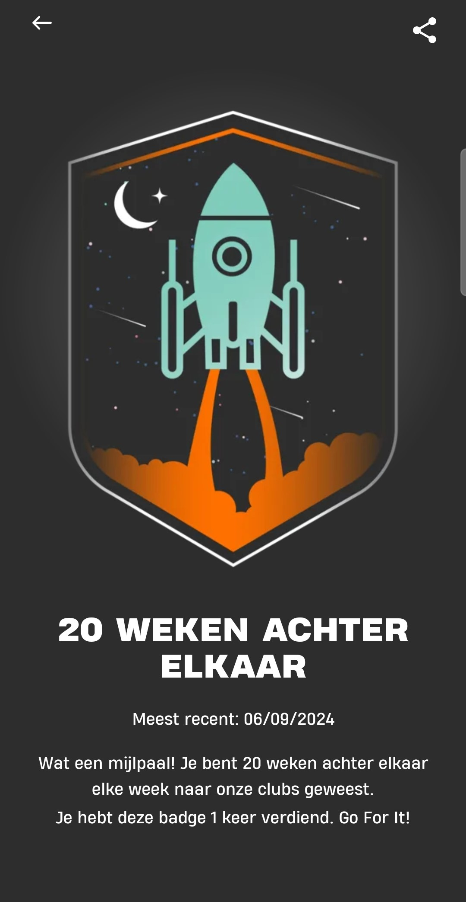

Een gezonde geest heeft een gezond lichaam nodig (en vice versa). Momenteel fitness ik tweemaal per week. Een dag train ik mijn bovenlichaam en de andere dag mijn onderlichaam. Zeker even belangrijk dan consistent trainen is je lichaam van de juiste voeding voorzien. Mijn huidig voedingsschema bestaat voornamelijk uit gezonde vetten, complete eiwitten en gezonde koolhydraten. Natuurlijk trakteer ik mezelf ook op een à twee cheatmeals per week, want anders hou je zo’n streng voedingsschema niet vol.
